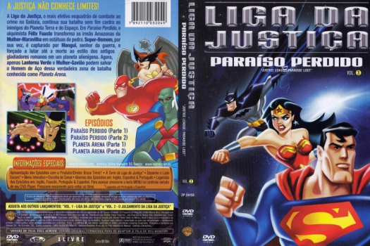

Outro Título:Justice League: Paradise Lost
País:United States, 120 minutos
Idiomas falados:Espanhol, Inglês, Português
Gênero(s):Fantasia, Animação, Sci-Fi, Aventura, Família
Diretor(s):Dan Riba
Escritor(es):
Codec:MPEG-2 (DVD)
Número: 5792


Certificado:
Sinopse:
A Mulher-Maravilha retorna à Ilha Paraíso após sua partida repentina, apenas para encontrar as Amazonas transformadas em pedra. O feiticeiro Felix Faust exige três artefatos místicos como resgate.
Elenco:
Tipo de mídia: DVD5,
Legendas: Espanhol, Francês, Inglês, Português, Sem Legendas
Alugado: Não
Tela: Anamorphic Widescreen